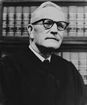

FORMER JUDGES
Judge George H. Prime
George h. Prime graduated from Hanover College in1927 and the Indiana law School in Indianapolis
in 1931.
He was an attorney in private practice for many years, including for the Home Owners Loan
Corporation and the Indiana Department of Financial Institutions. He was a attorney for the U.S.
Department of Agriculture and served in the office of Price Administration.
Judge Prime was elected as a Democrat to the Appellate Court of Indiana in 1984. He was Chief
Judge of the Court for the November 1985 term.
He was a founder and director of the First Indiana National Bank of Scottsburg. He received a
Sagamore of the Wabash in 1964 from Governor Mathew Welsh and an alumni achievement award
from Hanover College in 1966. He was president of the Hanover Alumni Association.
Judge Prime died in Scottsburg on January 23, 1990 at the age of 85. His wife Elizabeth Kihler Prime
proceded him in death. Judge Prime was survived by his sons, Morton and William.
in 1931.
He was an attorney in private practice for many years, including for the Home Owners Loan
Corporation and the Indiana Department of Financial Institutions. He was a attorney for the U.S.
Department of Agriculture and served in the office of Price Administration.
Judge Prime was elected as a Democrat to the Appellate Court of Indiana in 1984. He was Chief
Judge of the Court for the November 1985 term.
He was a founder and director of the First Indiana National Bank of Scottsburg. He received a
Sagamore of the Wabash in 1964 from Governor Mathew Welsh and an alumni achievement award
from Hanover College in 1966. He was president of the Hanover Alumni Association.
Judge Prime died in Scottsburg on January 23, 1990 at the age of 85. His wife Elizabeth Kihler Prime
proceded him in death. Judge Prime was survived by his sons, Morton and William.
